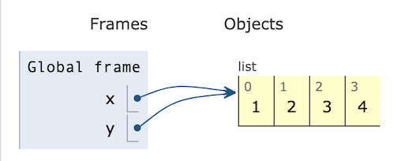
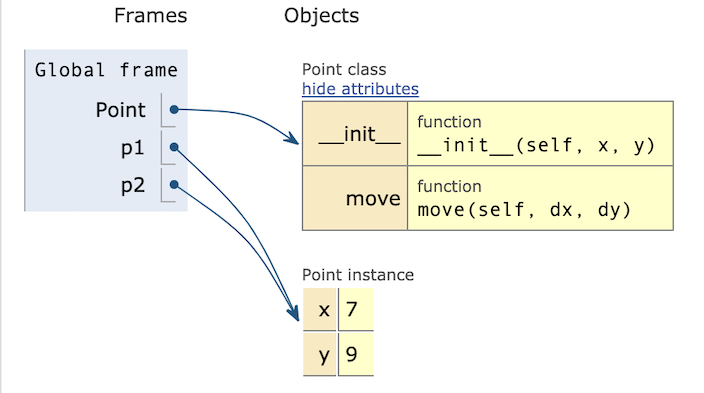

Objects#
In Python, objects are used to represent information. Every variable you use in a Python program is a reference to an object. The values you have been using so far – numbers, strings, dicts, lists, etc – are objects. They are among the built-in classes of Python, i.e., kinds of value that are already defined when you start the Python interpreter.
You are not limited to those built-in classes. You can use them as a foundation to build your own.
Example: Points#
What if we wanted to define a new kind of value?
For example, if we wanted to write a program
to draw a graph, we might want to work with
cartesian coordinates, representing each
point as an (x,y) pair. We might represent the
point as a tuple like (5,7), or we could represent
it as the list [5, 7], or we could represent
it as a dict {"x": 5, "y": 7}, and that
might be satisfactory. If we wanted to represent moving a point (x,y) by some distance (dx, dy), we could define a a function like
def move(p, d):
x,y = p
dx, dy = d
return (x+dx, y+dy)
pt_1 = (5,8)
pt_2 = move(pt_1, (3,7))
print(pt_2)
(8, 15)
But if we are making a graphics program, we’ll need to move
functions for other graphical objects like rectangles and ovals,
so instead of naming it move we’ll need a more descriptive name
like move_point. Also we should give the type contract for
the function, which we can do with Python type hints. With these
changes, we get something like this
from typing import Tuple
from numbers import Number
def move_point(p: Tuple[Number, Number],
d: Tuple[Number, Number]) \
-> Tuple[Number, Number]:
x, y = p
dx, dy = d
return (x+dx, y+dy)
move_point((3,4),(5,6))
(8, 10)
Can we do better?#
We aren’t really satisfied with using tuples to
represent points. What we’d really
like is to express the concept of adding two points
more concisely, as (3,4) + (5,6). What would happen if we
tried this?
(3,4) + (5,6)
(3, 4, 5, 6)
That’s not what we wanted! Would it be better if we represented points as lists?
[3,4] + [5,6]
[3, 4, 5, 6]
No better. Maybe as dicts?
{"x": 3, "y": 4} + {"x": 5, "y": 6}
---------------------------------------------------------------------------
TypeError Traceback (most recent call last)
Cell In[5], line 1
----> 1 {"x": 3, "y": 4} + {"x": 5, "y": 6}
TypeError: unsupported operand type(s) for +: 'dict' and 'dict'
That is not much of an improvement, although an error message is usually better than silently producing a bad result. What we really want is not to use one of the existing representations like lists or tuples or dicts, but to define a new representation for points.
A new representation#
Each data type in Python, including list, tuple,
and dict, is defined as a class from which
objects can be constructed. We can also define
our own classes, to construct new kinds of objects.
For example, we can make a new class Point to
represent points.
class Point:
"""An (x,y) coordinate pair"""
Inside the class we can define methods, which are like functions
that are specialized for the new representation. The first
method we should define is a constructor with the name __init__.
The constructor describes how to create a new Point object:
class Point:
"""An (x,y) coordinate pair"""
def __init__(self, x: Number, y: Number):
self.x = x
self.y = y
p = Point(5,3)
print(f"p has x coordinate {p.x} and y coordinate {p.y}")
p has x coordinate 5 and y coordinate 3
Instance variables#
Notice that the first argument to the constructor method is
self, and within the method we refer to self.x and self.y.
In a method that operates on some object o, the first argument
to the method will always be self, which refers to the whole
object o. Within the self object we can store instance
variables, like self.x and self.y
for the x and y coordinates of a point.
When we use the Point object p from outside the class,
we refer to those elements as p.x and p.y, as in the
print statement above.
Methods#
What about defining an operation for moving a point? Instead of
adding _point to the name of a move function, we can just
put the function (now called a method) inside the Point
class:
class Point:
"""An (x,y) coordinate pair"""
def __init__(self, x: Number, y: Number):
self.x = x
self.y = y
def move(self, d: "Point") -> "Point":
"""(x,y).move(dx,dy) = (x+dx, y+dy)"""
x = self.x + d.x
y = self.y + d.y
return Point(x,y)
Notice that the instance variables
self.x and self.y we created in the constructor
can be used in the move method. They are part of
the object, and can be used by any method in the class.
The instance variables of the other Point object d
are also available
in the move method. Let’s look at how these objects
are passed to the move method.
Method calls#
Next we’ll create two Point objects and call the move method
to create a third Point object with the sums of their x and
y coordinates:
p = Point(3,4)
v = Point(5,6)
m = p.move(v)
print(f"m has x coordinate {m.x} and y coordinate {m.y}")
m has x coordinate 8 and y coordinate 10
At first it may seem confusing that we defined the move method with two arguments, self and d, but
it looks like we passed it only one argument, v. In fact
we passed it both points: p.move(v) passes p as the self argument and v as the d argument. We use the variable
before the ., like p in this case, in two different ways: To find the right method (function) to call, by looking inside the class to
which p belongs, and to pass as the self argument to the method.
The move method above returns a new Point object at the
computed coordinates. A method can also change the values of
instance variables. For example, suppose we add a move_to
method to Point:
class Point:
"""An (x,y) coordinate pair"""
def __init__(self, x: Number, y: Number):
self.x = x
self.y = y
def move(self, d: "Point") -> "Point":
"""(x,y).move(dx,dy) = (x+dx, y+dy)"""
x = self.x + d.x
y = self.y + d.y
return Point(x,y)
def move_to(self, new_x, new_y):
"""Change the coordinates of this Point"""
self.x = new_x
self.y = new_y
m = Point(3,4)
m.move_to(19,23)
print(f"({m.x}, {m.y})")
(19, 23)
Note that the move_to method does not
return the moved point. This is a common mistake!
w = m.move_to(19, 23) # Oops!
print(w)
# Attempting to access w.x or w.y will fail:
print(f"w has x coordinate {w.x} and y coordinate {w.y}")
None
---------------------------------------------------------------------------
AttributeError Traceback (most recent call last)
Cell In[10], line 5
2 print(w)
4 # Attempting to access w.x or w.y will fail:
----> 5 print(f"w has x coordinate {w.x} and y coordinate {w.y}")
AttributeError: 'NoneType' object has no attribute 'x'
What is self?#
Many people are confused by the self variable. The name self is
merely a convention in Python. Conventions are important for
readability and avoiding errors, so you should never write code
like the following, but it may help you to see that there is really
nothing special about self aside from convention.
class BadExample():
"""An example in which we use other names instead of "self".
DON'T DO THIS ... but understand it.
"""
def __init__(elephant, x: int):
elephant.v = x # Might as well be consistently inconsistent
def increase(zebra, y: int):
zebra.v += y
wacky = BadExample(17)
wacky.increase(13)
print(wacky.v)
30
As you can see, when we make a method call like wacky.increase(13),
the first argument is the object wacky. We ordinarily call that
argument self, not because it matters to Python, but because it
matters to other programmers who need to read and understand our code.
Check your understanding#
Consider class Pet and object my_pet.
What are the instance variables of my_pet?
What are the values of those instance variables
after executing the code below?
class Pet:
def __init__(self, kind: str, name: str):
self.species = kind
self.called = name
def rename(self, new_name):
self.called = new_name
my_pet = Pet("canis familiaris", "fido")
A little magic#
We said above that what we really wanted was to express
movement of points very compactly, as addition. We
saw that addition of tuples or lists did not act as we
wanted; instead of (3,4) + (5,6) giving us (8,10), it
gave us (3,4,5,6). We can almost get what we want by describing
how we want + to act on Point objects. We do this by
defining a special method __add__:
class Point:
"""An (x,y) coordinate pair"""
def __init__(self, x: Number, y: Number):
self.x = x
self.y = y
def move(self, d: "Point") -> "Point":
"""(x,y).move(dx,dy) = (x+dx, y+dy)"""
x = self.x + d.x
y = self.y + d.y
return Point(x,y)
def move_to(self, new_x, new_y):
"""Change the coordinates of this Point"""
self.x = new_x
self.y = new_y
def __add__(self, other: "Point"):
"""(x,y) + (dx, dy) = (x+dx, y+dy)"""
return Point(self.x + other.x, self.y + other.y)
Special methods are more commonly known as magic methods.
They allow us to define how arithmetic operations like +
and - work for each class of object, as well as
comparisons like < and ==, and some other operations.
If p is a Point object, then p + q is interpreted as
p.__add__(q). So finally we get a very compact and
readable notation:
p = Point(3,4)
v = Point(5,6)
m = p + v
print(f"({m.x}, {m.y})")
(8, 10)
Magic for printing#
Suppose we wanted to print a Point object. We
could do it with an f-string, as we have above:
print(f"p is ({p.x}, {p.y})")
p is (3, 4)
That would give us a reasonable printed representation, like “p is (3, 4)”, but it is tedious, verbose, and easy to get wrong. What if we just wrote
print(f"p is {p}")
p is <__main__.Point object at 0x103f2eba0>
That isn’t a very useful way to print an object!
str()d, not shaken#
If we want to print Point objects as simply
as we print strings and numbers, but we want the
printed representation to be readable, we will need
to write additional methods to describe how a
Point object should be converted to a string.
In fact, in Python we normally write two magic
methods for this: __str__ describes how it
should be represented by the str() function,
which is the representation used in print
or in an f-string like f"it is {p}". We might
decide that we want the object created by Point(3,2)
to print as “(3, 2)”. We would then write a
__str__ method in the Point class like this:
class Point:
"""An (x,y) coordinate pair"""
def __init__(self, x: Number, y: Number):
self.x = x
self.y = y
def move(self, d: "Point") -> "Point":
"""(x,y).move(dx,dy) = (x+dx, y+dy)"""
x = self.x + d.x
y = self.y + d.y
return Point(x,y)
def move_to(self, new_x, new_y):
"""Change the coordinates of this Point"""
self.x = new_x
self.y = new_y
def __add__(self, other: "Point"):
"""(x,y) + (dx, dy) = (x+dx, y+dy)"""
return Point(self.x + other.x, self.y + other.y)
# Two new methods, used by the "str" and "repr"
# functions.
def __str__(self) -> str:
"""Printed representation.
str(p) is an implicit call to p.__str__()
"""
return f"({self.x}, {self.y})"
def __repr__(self) -> str:
"""Debugging representation. This is what
we see if we type a point name at the console.
"""
return f"Point({self.x}, {self.y})"
Now if we again execute
p = Point(17,13)
print(f"p is {p}")
p is (17, 13)
we get a more useful result.
A repr() for debugging#
Usually we will also want to provide a different
string representation that is useful in debugging
and at the Python command line interface. The
string representation above may be fine for end users,
but for the software developer it does not differentiate
between a tuple (3, 4) and a Point object (3, 4).
We can define a __repr__ method to give a string
representation more useful in debugging. The function
repr(x) is actually a call on the __repr__ method
of x, i.e., x.__repr__().
Although
Python will permit us to write whatever __repr__
method we choose, by accepted convention is to make
it look like a call on the constructor, i.e., like
Python code to create an identical object. Thus, for
the Point class we might write:
def __repr__(self) -> str:
return f"Point({self.x}, {self.y})"
Now we can write
print(f"repr(p) is {repr(p)}")
repr(p) is Point(17, 13)
More often, the repr function is called implicitly
when we just enter an expression at the console.
p + m
Point(25, 23)
The print function automatically applies the str function to its
arguments, so defining a good __str__ method will ensure it
is printed as you like in most cases. Oddly, though,
the __str__ method for list applies the __repr__ method
to each of its arguments, which we can see by writing
p = Point(22, 17)
v = Point(18, 13)
print(p)
print(v)
print([p, v])
(22, 17)
(18, 13)
[Point(22, 17), Point(18, 13)]
Check your understanding#
Which of the following are legal, and what values do they return?
str(5)(5).str()(5).__str__()__str__(5)repr([1, 2, 3])[1, 2, 3].repr()[1, 2, 3].__repr__()
What does the following little program print?
class Wrap:
def __init__(self, val: str):
self.value = val
def __str__(self) -> str:
return self.value
def __repr__(self) -> str:
return f"Wrap({self.value})"
a = Wrap("alpha")
b = Wrap("beta")
print([a, b])
Variables refer to objects#
Before reading on, try to predict what the following little program will print.
x = [1, 2, 3]
y = x
y.append(4)
print(x)
print(y)
Now execute that program. Did you get the result you expected? If it surprised you, try visualizing it in PythonTutor (http://pythontutor.com/). You should get a diagram that looks like this:

x and y are distinct variables, but they are both references to the same list. When we change y by appending 4, we are changing the same object
that x refers to. We say that x and y are aliases, two names for the same object.
Note this is very different from the following:
x = [1, 2, 3]
y = [1, 2, 3]
y.append(4)
print(x)
print(y)
Each time we create a list like [1, 2, 3], we are creating a distinct
list. In this seocond version of the program, x and y are not
aliases.

It is essential to remember that variables hold references to objects, and there may be more than one reference to the same object. We can observe the same phenomenon with classes we add to Python. Consider this program:
p1 = Point(3,5)
p2 = p1
p1.move_to(7, 9)
print(p2)
(7, 9)
Once again we have created two variables that are aliases, i.e., they refer to the same object. PythonTutor illustrates:

Note that Point is a reference to the class, while p1 and p2 are references to the Point object we created from the Point class. When we call p1.move, the move method of class Point makes a change to
the object that is referenced by both p1 and p2. We often say that
a method like move mutates an object.
There is another way we could have written a method like move.
Instead of mutating the object (changing the values of its fields
x and y), we could have created a new Point object at the
modified coordinates:
class Point:
"""An (x,y) coordinate pair"""
def __init__(self, x: int, y: int):
self.x = x
self.y = y
def moved(self, dx: int, dy: int) -> "Point":
return Point(self.x + dx, self.y + dy)
p1 = Point(3,5)
p2 = p1
p1 = p1.moved(4,4)
print(p1.x, p1.y)
print(p2.x, p2.y)
7 9
3 5
Notice that method moved, unlike method move in the prior example,
return a new Point object that is distinct from the Point object that was aliased. Initially p1 and p2 may be aliases, after p2 = p1:

But after p1 = p1.moved(4,4), p1 refers to a new, distinct object:

As we saw with the list example, aiasing applies to objects
from the built-in Python classes as well as to objects
from the classes that you will write. It just hasn’t been
apparent until now, because many of the built-in classes
are immutable: They do not have any methods that
change the values stored in an object. For example, when
we write 3 + 5, we are actually calling (3).__add__(5);
The __add__ method does not change the value of 3 (that
would be confusing!) but instead returns a new object 8.
We will write both immutable and mutable classes.
Aliasing of mutable objects is often a mistake, but not always.
Later we will intentionally created aliases to access
mutable objects. The important thing is to be aware of it.
Combining Objects: Composing#
The instance variables defined in a class and stored in the objects of that class can themselves be objects. We can make lists of objects, tuples of objects, etc.
Often we will want to create a new class with instance
variables that are objects created from classes that
we have previously created. For example, if we create a
new class Rect to represent rectangles, we might want
to use Point objects to represent two corners of
the rectangle:
Show code cell content
class Point:
"""An (x,y) coordinate pair"""
def __init__(self, x: Number, y: Number):
self.x = x
self.y = y
def move(self, d: "Point") -> "Point":
"""(x,y).move(dx,dy) = (x+dx, y+dy)"""
x = self.x + d.x
y = self.y + d.y
return Point(x,y)
def move_to(self, new_x, new_y):
"""Change the coordinates of this Point"""
self.x = new_x
self.y = new_y
def __add__(self, other: "Point"):
"""(x,y) + (dx, dy) = (x+dx, y+dy)"""
return Point(self.x + other.x, self.y + other.y)
def __str__(self) -> str:
"""Printed representation.
str(p) is an implicit call to p.__str__()
"""
return f"({self.x}, {self.y})"
def __repr__(self) -> str:
"""Debugging representation. This is what
we see if we type a point name at the console.
"""
return f"Point({self.x}, {self.y})"
class Rect:
"""A rectangle is represented by a pair of points
(x_min, y_min), (x_max, y_max) at opposite corners.
Whether (x_min, y_min) is lower left or upper left
depends on the coordinate system.
"""
def __init__(self, xy_min: Point, xy_max: Point):
self.min_pt = xy_min
self.max_pt = xy_max
def area(self) -> Number:
"""Area is height * width"""
height = self.max_pt.x - self.min_pt.x
width = self.max_pt.y - self.min_pt.y
return height * width
def translate(self, delta: Point) -> "Rect":
"""New rectangle offset from this one by delta as movement vector"""
return Rect(self.min_pt + delta, self.max_pt + delta)
def __repr__(self) -> str:
return f"Rect({repr(self.min_pt)}, {repr(self.max_pt)}"
def __str__(self) -> str:
return f"Rect({str(self.min_pt)}, {str(self.max_pt)})"
p1 = Point(3,5)
p2 = Point(8,7)
r1 = Rect(p1, p2)
mvmt = Point(4, 5)
r2 = r1.translate(mvmt) # Treat Point(4,5) as (dx, dy)
print(f"{r1} + {mvmt} => {r2}")
print(f"Area of {r1} is {r1.area()}")
Rect((3, 5), (8, 7)) + (4, 5) => Rect((7, 10), (12, 12))
Area of Rect((3, 5), (8, 7)) is 10
Note that the height and width are local variables
that exist only while method area is executing.
min_pt and max_pt, on the other hand, are
instance variables that are stored within the
Rect object.
Check your understanding#
Suppose we ran the above code in PythonTutor.
(PythonTutor cannot import Number, but for the examples we could
replace it with int.) What picture would it draw
of r1? Would height and width in method
area be included as instance variables? Why or
why not?
Wrapping and delegation#
Sometimes we want a class of objects that is almost
like an existing class, but with a little extra
information or a few new methods. One way to do this
is to build a new class that wraps an existing class,
often a built-in class like list or dict. (In
the next chapter we will
see another approach.)
Suppose we wanted objects that provide some of the same
functionality as list objects, and also some new
functionality or some restrictions. For example, we
might want a method area that returns the sum of
the areas of all the Rect objects in the RectList:
class RectList:
"""A collection of Rects."""
def __init__(self):
self.elements = [ ]
def area(self) -> Number:
total = 0
for el in self.elements:
total += el.area()
return total
That seems reasonable, but how do we add Rect objects to the
Rectlist?
We do not want to do it this way:
li = RectList()
# DON'T DO THIS
li.elements.append(Rect(Point(3,3), Point(5,7)))
li.elements.append(Rect(Point(2,2), Point(3,3)))
As a general rule, we should be cautious about accessing the instance
variables of an object outside of methods of the object’s class,
and we should especially avoid modifying instance variables anywhere
except in methods. Code that “breaks the abstraction”, like the example
above calling the append method of the elements instance variable, is
difficult to read and maintain. So we want instead to give RectList
it’s own append method, so that we can write
li = RectList()
li.append(Rect(Point(3,3), Point(5,7)))
li.append(Rect(Point(2,2), Point(3,3)))
print(f"Combined area is {li.area()}")
The append method can be very simple!
def append(self, item: Rect):
"""Delegate to elements"""
self.elements.append(item)
Show code cell content
class RectList:
"""A collection of Rects."""
def __init__(self):
self.elements = [ ]
def append(self, item: Rect):
"""Delegate to elements"""
self.elements.append(item)
def area(self) -> Number:
total = 0
for el in self.elements:
total += el.area()
return total
li = RectList()
li.append(Rect(Point(3,3), Point(5,7)))
li.append(Rect(Point(2,2), Point(3,3)))
print(f"Combined area is {li.area()}")
Combined area is 9
We call this delegation because append method of RectList method
just hands off the work to the append method of class list. When we
write a wrapper class, we typically write several such
trivial delegation methods.
Wrapping and delegation work well when we want the wrapper class
(like RectList in this example) to
have a few of the same methods as the wrapped class (list). When
we want the new collection class to have all or nearly all the methods
of an existing collection, the inheritance approach introduced in the
next chapter is more appropriate.